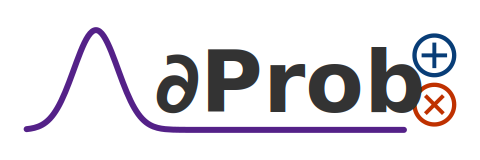

Abstract
DeeProb-kit is a Python library that implements deep probabilistic models such as various kinds of Sum-Product Networks, Normalizing Flows and their possible combinations for probabilistic inference. Some models are implemented using PyTorch for fast training and inference on GPUs.
Features
Batch Expectation-Maximization (EM) for SPNs with arbitrarily leaves. 13 14
Structural marginalization and pruning algorithms for SPNs.
High-order moments computation for SPNs.
JSON I/O operations for SPNs and CLTs. 4
Plotting operations based on NetworkX for SPNs and CLTs. 4
Randomized And Tensorized SPNs (RAT-SPNs) using PyTorch. 5
Masked Autoregressive Flows (MAFs) using PyTorch. 6
Real Non-Volume-Preserving (RealNVP) and Non-linear Independent Component Estimation (NICE) flows. 7 8
Deep Generalized Convolutional SPNs (DGC-SPNs) using PyTorch. 10
The collection of implemented models is summarized in the following table. The supported data dimensionality for each model is showed in the Input Dimensionality column. Moreover, the Supervised column tells which model is suitable for a supervised learning task, other than density estimation task.
Model |
Description |
Input Dimensionality |
Supervised |
|---|---|---|---|
Binary-CLT |
Binary Chow-Liu Tree (CLT) |
D |
❌ |
SPN |
Vanilla Sum-Product Network, using LearnSPN |
D |
✔ |
RAT-SPN |
Randomized and Tensorized Sum-Product Network |
D |
✔ |
DGC-SPN |
Deep Generalized Convolutional Sum-Product Network |
(1, D, D); (3, D, D) |
✔ |
MAF |
Masked Autoregressive Flow |
D |
❌ |
NICE |
Non-linear Independent Components Estimation Flow |
(1, H, W); (3, H, W) |
❌ |
RealNVP |
Real-valued Non-Volume-Preserving Flow |
(1, H, W); (3, H, W) |
❌ |
Installation & Documentation
The library can be installed either from PIP repository or by source code.
# Install from PIP repository
pip install deeprob-kit
# Install from `main` git branch
pip install -e git+https://github.com/deeprob-org/deeprob-kit.git@main#egg=deeprob-kit
The documentation is generated automatically by Sphinx (with Read-the-Docs theme), and it’s hosted using GitHub Pages at deeprob-kit.
Datasets and Experiments
A collection of 29 binary datasets, which most of them are used in Probabilistic Circuits literature, can be found at UCLA-StarAI-Binary-Datasets.
Moreover, a collection of 5 continuous datasets, commonly present in works regarding Normalizing Flows, can be found at MAF-Continuous-Datasets.
After downloading them, the datasets must be stored in the experiments/datasets directory to be able to run the experiments
(and Unit Tests).
The experiments scripts are available in the experiments directory and can be launched using the command line
by specifying the dataset and hyper-parameters.
Code Examples
A collection of code examples can be found in the examples directory.
However, the examples are not intended to produce state-of-the-art results,
but only to present the library.
The following table contains a description about them and a code complexity ranging from one to three stars. The Complexity column consists of a measure that roughly represents how many features of the library are used, as well as the expected time required to run the script.
Example |
Description |
Complexity |
|---|---|---|
naive_model.py |
Learn, evaluate and print statistics about a naive factorized model. |
⭐ |
spn_plot.py |
Instantiate, prune, marginalize and plot some SPNs. |
⭐ |
clt_plot.py |
Learn a Binary CLT and plot it. |
⭐ |
spn_moments.py |
Instantiate and compute moments statistics about the random variables. |
⭐ |
sklearn_interface.py |
Learn and evaluate a SPN using the scikit-learn interface. |
⭐ |
spn_custom_leaf.py |
Learn, evaluate and serialize a SPN with a user-defined leaf distribution. |
⭐ |
clt_to_spn.py |
Learn a Binary CLT, convert it to a structured decomposable SPN and plot it. |
⭐ |
spn_clt_em.py |
Instantiate a SPN with Binary CLTs, apply EM algorithm and sample some data. |
⭐⭐ |
clt_queries.py |
Learn a Binary CLT, plot it, run some queries and sample some data. |
⭐⭐ |
ratspn_mnist.py |
Train and evaluate a RAT-SPN on MNIST. |
⭐⭐ |
dgcspn_olivetti.py |
Train, evaluate and complete some images with DGC-SPN on Olivetti-Faces. |
⭐⭐ |
dgcspn_mnist.py |
Train and evaluate a DGC-SPN on MNIST. |
⭐⭐ |
nvp1d_moons.py |
Train and evaluate a 1D RealNVP on Moons dataset. |
⭐⭐ |
maf_cifar10.py |
Train and evaluate a MAF on CIFAR10. |
⭐⭐⭐ |
nvp2d_mnist.py |
Train and evaluate a 2D RealNVP on MNIST. |
⭐⭐⭐ |
nvp2d_cifar10.py |
Train and evaluate a 2D RealNVP on CIFAR10. |
⭐⭐⭐ |
spn_latent_mnist.py |
Train and evaluate a SPN on MNIST using the features extracted by an autoencoder. |
⭐⭐⭐ |
References
1. Peharz et al. On Theoretical Properties of Sum-Product Networks. AISTATS (2015).
2. Poon and Domingos. Sum-Product Networks: A New Deep Architecture. UAI (2011).
3. Molina, Vergari et al. Mixed Sum-Product Networks: A Deep Architecture for Hybrid Domains. AAAI (2018).
4. Molina, Vergari et al. SPFLOW : An easy and extensible library for deep probabilistic learning using Sum-Product Networks. CoRR (2019).
5. Peharz et al. Probabilistic Deep Learning using Random Sum-Product Networks. UAI (2020).
6. Papamakarios et al. Masked Autoregressive Flow for Density Estimation. NeurIPS (2017).
7. Dinh et al. Density Estimation using RealNVP. ICLR (2017).
8. Dinh et al. NICE: Non-linear Independent Components Estimation. ICLR (2015).
9. Papamakarios, Nalisnick et al. Normalizing Flows for Probabilistic Modeling and Inference. JMLR (2021).
10. Van de Wolfshaar and Pronobis. Deep Generalized Convolutional Sum-Product Networks for Probabilistic Image Representations. PGM (2020).
11. Rahman et al. Cutset Networks: A Simple, Tractable, and Scalable Approach for Improving the Accuracy of Chow-Liu Trees. ECML-PKDD (2014).
12. Di Mauro, Gala et al. Random Probabilistic Circuits. UAI (2021).
13. Desana and Schnörr. Learning Arbitrary Sum-Product Network Leaves with Expectation-Maximization. CoRR (2016).
14. Peharz et al. Einsum Networks: Fast and Scalable Learning of Tractable Probabilistic Circuits. ICML (2020).